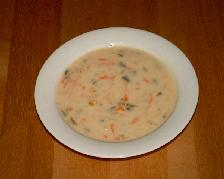

Keittokirja
Olet sivuillani kävijä.
Sisällysluettelo
- Broileriruokia
- Juomia
- Jälkiruokia
- Kakkureseptejä
- Kalaruokia
- Kastikkeita
- Keittoja
- Leipäreseptejä
- Liharuokia
- Pastaruokia
- Pullareseptejä
- Pikkuherkkuja
- Atsovärit
- seti@kauppinen.com
Sivut päivitetty 9.9.2019
Keittoja
Keittokirjan etusivulle.
Kermainen LohikeittoProvencelainen Tomaattikeitto
Punainen keitto
Täyteläinen Kesäkeitto
Provencelainen tomaattikeitto
- 2 valkosipulinkynttä
- 2 sipulia
- 1 rkl öljyä
- 2 pekonin viipaletta (voi jättää pois)
- ½ l lihalientä
- 2 dl kuivaa valkoviiniä (alkoholitonkin käy)
- 1 tl Herbes de Provence -yrttiseosta (Santa Maria)
- 750 g kypsiä pihvitomaatteja
- ½ pientä kesäkurpitsaa
- 1 keltainen paprika
- 1 dl keitettyä riisiä
- suolaa, mustapippuria
Kiehauta kuoritut, hienonnetut valkosipulit ja viipaloidut sipulit öljyssä pilkotun pekonin kanssa. Lisää lihaliemi ja valkoviini. Lisää yrttiseos ja anna kiehahtaa. Kasta tomaatit kuumaan veteen ja kuori ne. Leikkaa lohkoiksi ja lisää keittoon. Lisää suola ja pippuri, anna kiehua 15 minuuttia. Suikaloi paprika ja kesäkurpitsa suurehkoiksi lohkoiksi. Lisää kesäkurpitsa, paprika ja keitetty riisi keittoon. Kiehauta 10 minuuttia ilman kantta. Tarjoile Italialaisen Ruokaleivän kanssa.
[Keittohakemiston alkuun] 
{kind=link}
Täyteläinen Kesäkeitto
- 3 porkkanaa
- 3 perunaa
- ½ kesäkurpitsaa
- kourallinen kukkakaalia
- 125 g Koskenlaskija sulatejuustoa
- 1 kasvisliemikuutio
- n.½ litraa vettä
Kuori perunat ja porkkanat. Raasta karkeaksi raasteeksi tai suikaloi perunat, porkkana ja kesäkurpitsa. Laita kattilaan raastetut vihannekset, paloiteltu kukkakaali, vesi ja liemikuutio. Keitä kunnes kukkakaali alkaa pehmetä. Lisää paloiteltu sulatejuusto. Anna juuston sulaa kokonaan keittoon. Kiehauta lopuksi.
[Keittohakemiston alkuun]
Kermainen lohikeitoo
- 3 porkkanaa
- 5-6 perunaa
- ½ purjosipulia
- 1 kalaliemikuutio
- n.1 litraa vettä
- n.½ kg lohta
- tilliä (kuivattua tai tuoretta)
- karkeaa suolaa
- 1dl kermaa
Kuori perunat ja porkkanat. Paloittele perunat ja porkkana, viipaloi purjosipuli. Laita lohifileen päälle karkeaa suolaa ja tilliä. Voit antaa kalan maustua myös yön yli. Laita kattilaan purjo ja porkkanat, vesi ja liemikuutio. Keitä n. 10 minuuttia. Lisää perunat. Keitä kypsäksi. Lisää kuutioidut, nahattomat kalapalat. Kiehauta. Lisää lopuksi kerma, älä enää keitä. Tarjoile tuoreen ruisleivän kera.
[Keittohakemiston alkuun]
Punainen keitto
- 1 sipuli
- 2 valkosipulinkynttä
- tilkka öljyä
- 1 palsternakka
- 5 pienehköä punajuurta
- 2 Rosamunda-perunaa
- 1 ½ l kasvis- tai kanalientä
- (suolaa)
- rouhittua mustapippuria
- 2 dl ruokakermaa
Silppua sipuli ja valkosipulinkynnet. Kuori ja raasta juurekset. Kuullota sipulisilppu öljyssä. Lisää joukkoon raastetut juurekset, mausteet ja neste. Keitä hiljalleen noin tunnin ajan. Lisää lohkotut perunat. Keitä perunat kypsiksi ja soseuta keitto.
Lisää kerma ja tarjoa alkukeittona tai pääruokana.
[Keittohakemiston alkuun]